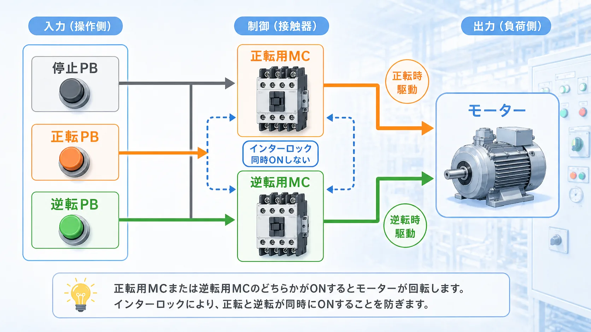
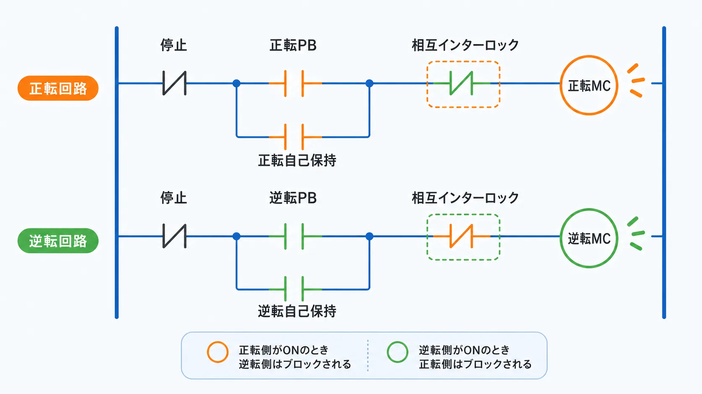
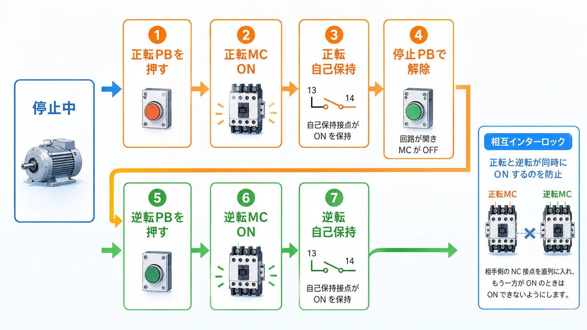
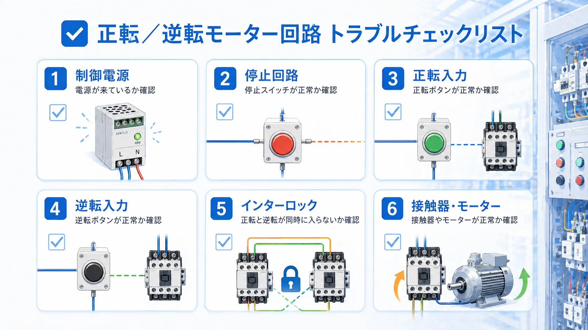

1. まずは結論から
正転・逆転回路は、モーターを正転方向と 逆転方向へ切り替えるための基本回路です。 コンベアの前後送り、昇降の上下、左右動作など、方向を切り替えたい設備でよく出てきます。
ただし、正転用と逆転用の接触器が同時に入ると危険です。 そのため、ラダーでは自己保持だけでなく、 相手側が入っている時は自分側を入れないという 相互インターロックを必ず考えます。
方向を切り替える回路だが、同時動作防止まで含めて考える
正転・逆転回路は、ただ切り替えるだけの回路ではありません。 正転時は逆転側を入れない、逆転時は正転側を入れない、という 安全で基本的な考え方まで含めて理解すると、回路が追いやすくなります。

先輩正転・逆転回路は、自己保持回路の次に見ておきたい基本回路だね。大事なのは、反対側を同時に入れないことだよ。

後輩ただモーターの向きを変えるだけじゃなくて、同時に入らないようにする回路として見るんですね。
2. 正転・逆転回路とは？
正転・逆転回路とは、モーターの回転方向を切り替えるための回路です。 一般的には、正転用の電磁接触器と逆転用の電磁接触器を分けて考えます。
正転ボタンを押したら正転側の接触器が入り、逆転ボタンを押したら逆転側の接触器が入る、 というのが基本の考え方です。 実際の主回路は設備仕様で変わるので、ここではまず 制御回路の流れを中心に整理します。

最初は主回路よりも制御回路の考え方を先に見る
初心者のうちは、停止ボタン、正転ボタン、逆転ボタン、自己保持、インターロックの流れを先に押さえる方が理解しやすいです。 まずは「どの条件でどのコイルが入るか」を見るのがおすすめです。
3. 基本構成を部品ごとに見る
正転・逆転回路の基本構成は、停止ボタン、正転スタート、逆転スタート、 正転用コイル、逆転用コイル、そしてモーターです。 設備によってはサーマルリレーや異常条件、安全回路なども入りますが、 まずは基本形で整理すると追いやすくなります。
停止ボタン
正転・逆転の両方に共通で効く停止条件です。どちらの回路でも上流側に入ることが多いです。
正転ボタン
正転側のコイルを動かすためのスタート条件です。押した時だけ一瞬ONになります。
逆転ボタン
逆転側のコイルを動かすためのスタート条件です。正転側とは別に考えます。
正転用・逆転用コイル
どちらの方向へ回すかを切り替える中心です。同時にONしないようにするのが重要です。
実機では補助接点や機械的インターロックも関係する
実際の設備では、ラダーだけでなく接触器の補助接点や機械的インターロックも関係します。 この記事では、初心者向けに制御回路の考え方が見えるように簡略化しています。
4. 基本ラダー図の見方
GX Works3でラダーを見る時も、まずは難しい命令ではなく、 接点とコイルの関係で見るのが基本です。 正転側と逆転側を別々の段で考え、それぞれに自己保持と相手側のインターロックを入れるイメージです。
最初に見るポイントは、停止条件、スタート入力、自己保持、相手側のインターロック、 そして最後に出力コイルです。これを左から順番に見ていくと理解しやすいです。

- 停止条件：正転・逆転どちらにも共通で効く条件です。
- スタート入力：正転PBと逆転PBを分けて見ます。
- 自己保持：一度押した後も運転を保持する接点です。
- 相互インターロック：反対側が動作中の時は入らないようにする接点です。
正転側だけをまず読むと理解しやすい
最初から正転側と逆転側を同時に追うと混乱しやすいです。 先に正転側だけを読み、次に逆転側を見ると、左右対称のような考え方だと分かりやすくなります。
5. 動作の流れを順番に見る
回路記事では、ラダー図だけでなく 押した時に何が起きるかを順番に追うと、理解がかなり進みます。 正転時と逆転時で、どこが同じでどこが違うかを見るのがポイントです。

- 停止中：正転側も逆転側もOFFです。自己保持も成立していません。
- 正転ボタンを押す：停止条件が成立していて、逆転側が入っていなければ正転コイルがONします。
- 自己保持が入る：ボタンを離しても正転側が保持され、モーターは正転を続けます。
- 停止ボタンを押す：自己保持が切れて正転側がOFFになります。
- 逆転ボタンを押す：今度は逆転側が同じ考え方でONし、逆方向へ動きます。
正転中に逆転ボタンを押しても、すぐ逆転しない考え方が大切
正転中は逆転側がインターロックで止められているのが基本です。 いったん停止してから逆転へ移る、という流れで考えると、安全で分かりやすい回路になります。
6. 相互インターロックが大事な理由
正転と逆転は、同時に動作してはいけない関係です。 そのため、正転側の回路には逆転側が入っていないこと、 逆転側の回路には正転側が入っていないことを条件として入れます。
このように、相手側の動作を禁止条件として入れる考え方が相互インターロックです。 現場でラダーを見る時も、正転側と逆転側のどちらにも 相手側を止める接点が入っているかを確認します。
| 見る場所 | 役割 | 確認ポイント |
|---|---|---|
| 正転側 | 正転コイルを動かす | 逆転側がONしている時に、正転が入らない条件になっているか。 |
| 逆転側 | 逆転コイルを動かす | 正転側がONしている時に、逆転が入らない条件になっているか。 |
| 停止条件 | どちらも止める | 停止ボタンや異常条件が、正転・逆転の両方に効いているか。 |
ラダー上だけでなく実機側のインターロックも軽く見ない
ラダー上の条件だけでなく、実機では接触器の補助接点や機械的インターロック、サーマル、安全回路も関係します。 実配線や改造は、必ず設備仕様、社内基準、メーカー資料に従ってください。
7. GX Works3で見る時のポイント
GX Works3でラダーを見る時は、画面全体を何となく眺めるのではなく、 出力が入るまでの条件を左から順番に追うのが基本です。
たとえば正転側が入らないなら、停止条件、正転PB、自己保持、 逆転側インターロックのどこで切れているかを順番に見ます。 逆転側も同じで、左右対になる回路として見ると分かりやすいです。
入力状態を見る
停止PB、正転PB、逆転PBが想定どおりON/OFFしているかを確認します。
自己保持を見る
スタート後に保持接点が入っているか、停止で切れるかを見ます。
反対側条件を見る
相手側コイルや補助接点が、インターロックとして効いているかを確認します。
出力だけで判断しない
コイルがONしない時は、出力より前の条件を順番に追う方が原因を見つけやすいです。
GX Works3ベースで考えるが、この記事は概念図として見ればOK
実際のGX Works3では、使用PLC、入力番号、出力番号、内部リレー、異常条件などに合わせて回路を組みます。 この記事では、初心者が回路の考え方をつかみやすいように簡略化しています。
8. 正転しない・逆転しない時の確認ポイント
正転しない、逆転しない時は、モーターや接触器だけを疑う前に、 入力条件とインターロック条件を順番に確認します。 特に、正転だけ動かない、逆転だけ動かない場合は、 それぞれのスタート入力や反対側条件を見ていくと原因を追いやすいです。

電源
PLC、制御電源、接触器まわりに電源が来ているかを確認します。
停止条件
停止ボタン、非常停止、異常条件が解除されているかを見ます。
正転入力
正転PBが入力として入っているかをGX Works3上で確認します。
逆転入力
逆転PBが入力として入っているかを確認します。
インターロック
反対側の条件が残っていて、動作を止めていないかを確認します。
接触器・モーター
コイル通電、補助接点、サーマル、モーター側に異常がないかを確認します。
9. まとめ
正転・逆転回路は、モーターの回転方向を切り替えるための基本回路です。 自己保持回路をベースに、正転側と逆転側を分けて見ると理解しやすくなります。
ただし、方向を切り替える回路だからこそ、 正転と逆転を同時に入れないという考え方が大切です。 ラダーでは自己保持と相互インターロックをセットで見て、 GX Works3では条件を左から順番に追う、という流れで確認すると分かりやすいです。
- 正転・逆転回路はモーターの方向を切り替える基本回路
- 停止条件、スタート入力、自己保持、インターロックの順で見ると追いやすい
- 正転中は逆転を入れない、逆転中は正転を入れない考え方が大切
- 実機では補助接点、サーマル、安全回路、設備仕様も必ず確認する
この記事は役に立ちましたか？
今後の記事づくりの参考にします。どちらかを選ぶだけで回答できます。
回答は匿名で集計し、個人情報の入力はありません。